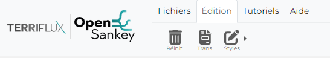
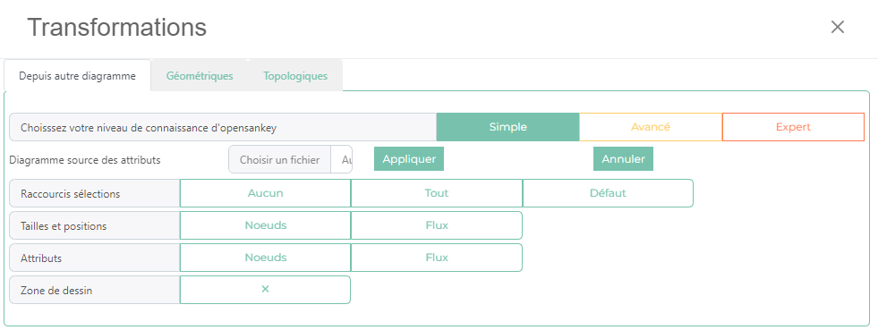
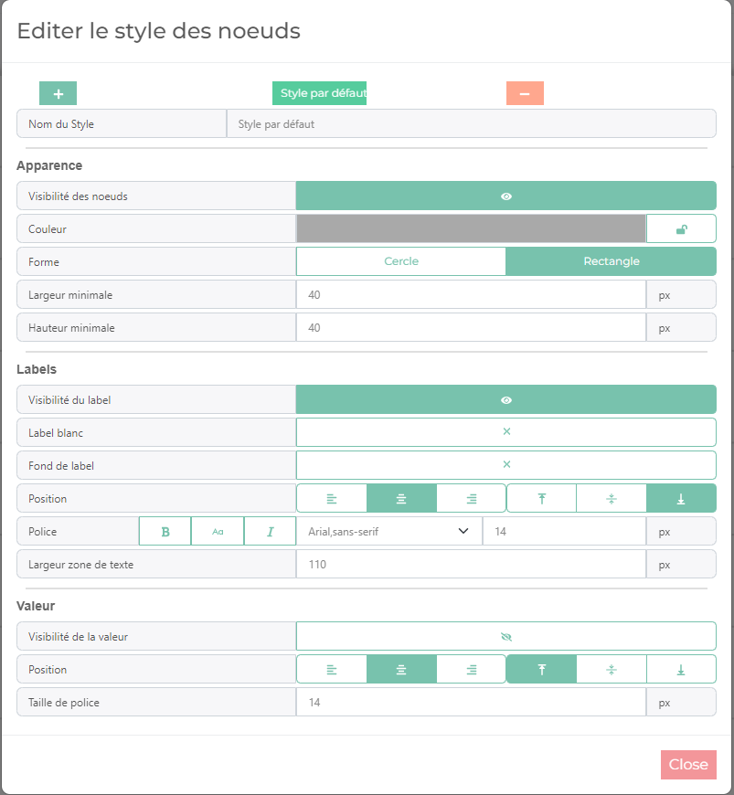
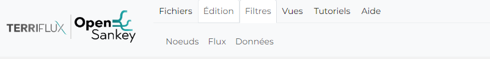
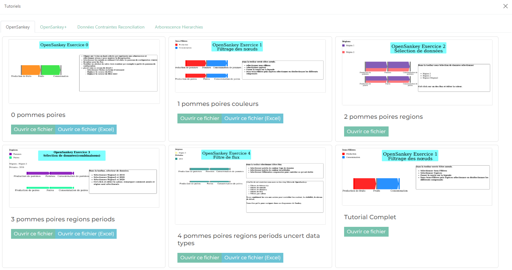
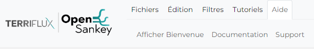

La partie gauche de la barre d’édition contient des sélecteur du comportement de la souris. Pour choisir le comportement de la souris il faut simplement cliquer sur le mode qui nous intéresse.
Fichiers

Ouvrir
Un fichier JSON contenant les données au format utilisé par l’application
Un fichier Excel contenant les données dans format spécialement fait pour OpenSankey
Télécharger
Enregistre les données utilisé par l’application sur l’ordinateur:
Au format JSON
Au format Excel
Exporter
Permet de créer une image du sankey actuel :
Au format SVG
Au format PNG
Au format PDF
Réglage
Permet de modifier quelques varaible de l’application tel que :
La langue de l’application
Le sous menu visible dans le menu de configuration (avec des mode pré-définis : Simple/Expert)
Modèles
Ouvre un modale avec des exemple de diagramme de sankey que l’on peut ouvrir et modifier. Ces modèles montrent également ce que l’on peut produire avec l’application.
Sauvegarde
Enregistre les données actuel dans le navigateur, peut-être utile quand l’on veut apporter des modifications dont on ne sait pas ils seront pertinents et donc pouvoir revenir à une version satisfaisante en rechargant l’application
Édition

Reinitialiser
Bouton permetant de réinitialiser le sankey.
Transformation
Ouvre un modale qui permet de modifier le sankey actuel avec des variables d’un autres sankey

Après avoir choisis un sankey via le sélecteur de fichier (au format JSON), on choisis différents attributs que l’on veut importer du fichier.
Styles
Permet d’ouvrir un modal où l’on peut créer, modifier et supprimer des styles de noeuds et flux. Les styles sont les valeurs par défaut des noeuds/flux auxquels ils sont associés.
Les variables des styles concenent les attributs d’apparences des noeuds/flux (couleur,taille des labels,…)
Exemple du modale d’édition des styles de noeuds:

Filtres

Ce sous-menu de navigation apparait quand il y a au au moins un groupe d’étiquette dans les données (groupe d’étiquette de noeud, flux ou données)
Il permet d’afficher ou cacher des éléments selon leur étiquette associée, voir appliquer la palette de couleurs du groupe d’étiquette définies dans le menu de configuration. Les couleurs des différentes étiquettes du groupe sont affichées généralement en haut a gauche dans la zone de dessin quand on choisis d’appliquer les couleurs d’un groupe d’étiquette.
Tutoriels
Ouvre un modale contenant des sankey tutoriels qui permettent la prise en main de l’application
Le modale contient plusieurs sous-parties pour explorer les fonctionnalités de l’application allant du plus simple au plus difficile

Aide

Ce sous-menu permet d’ouvrir différentes aide :
Le modal de bienvenue qui contient des informations sur l’application et les raccourcis clavier
Un lien vers la documentation
Un lien vers l’addresse mail de support si vous rencontrez des bugs sur l’application